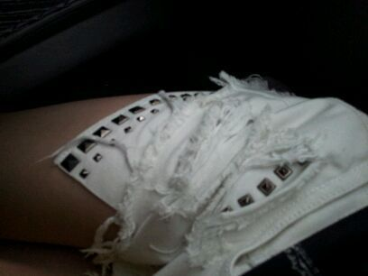

ほいっ,ろってぃーでぇす♪
昨日は朝から
乃木坂浪漫♪の
撮影をしてきました^^
初めてだったんですが
楽しかったですっ・ω・´
終わってから
スタジオに行って
ハウスの確認をして
それからまた、
まひろ みさみさ あみ
ひめか さゆりん
で浪漫のお仕事でした*・ω・*
そして 昨日のまひろは...
こんな感じです=・∀・=
今度は ゾウさん♪
ぢゃなくて 馬っ ))) !!!
髪の毛でよく見えないよね♪
古着ぢゃないけど
馬に人がまたがってる絵が
書いた古着っぽいTシャツに

ポケットにスタッズが
付いてて,
間や下から見える様に
なってる^^♪
黒の細いベルトにも
スタッズがいくつか
ついてまプ〜。
後,十字架のアクセサリー
つけたりしてます=・ω・=
いぇい。
今日は やっと行けた...。
パスポート♪取りに
行けましたよっ ))
帰りに 本屋に行って
文庫 二冊買っちゃいました
(*^^*)
ではではっ
またねっ★☆★のし
rotty,